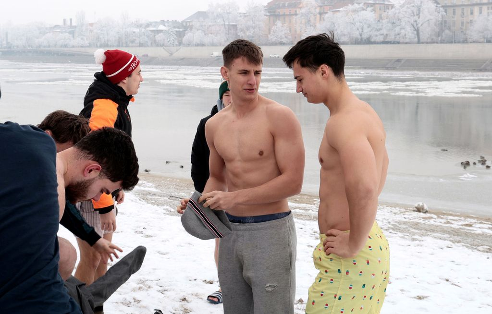
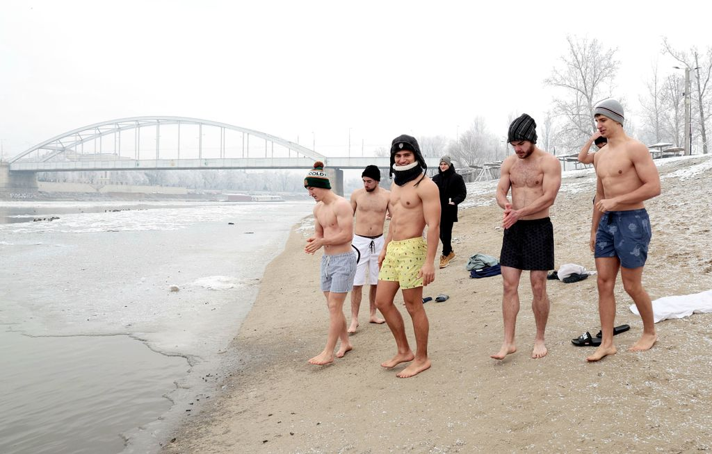
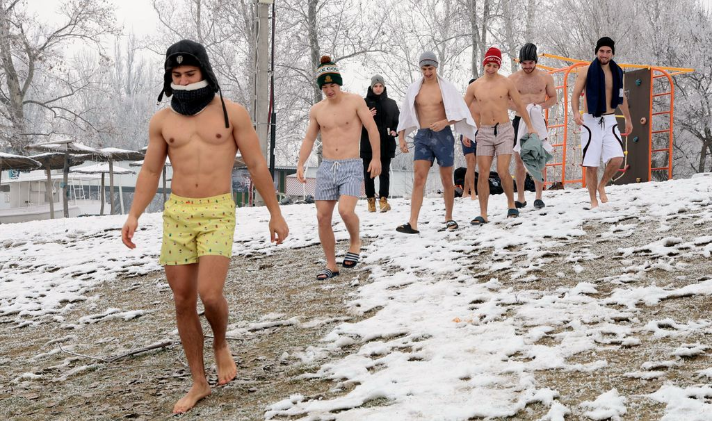
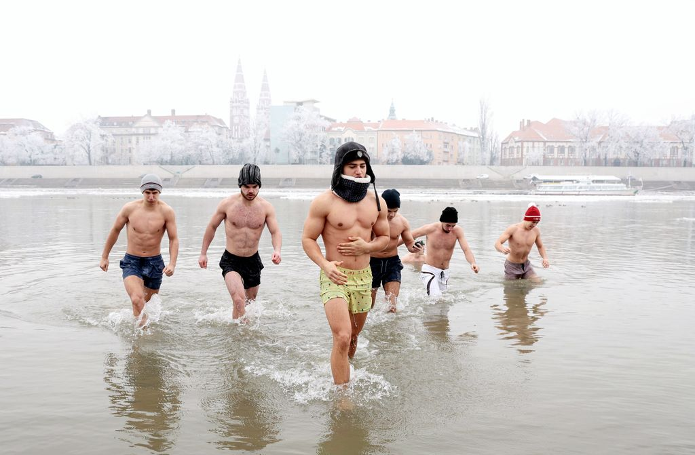

High School
I was born in Szeged, Hungary on 10 November 2006, and went to SZTE Gyakorló Gimnázium. During high school I developed a strong interest in mathematics and geography. I graduated in 2025 with top grades (5) in every matura subject, taking mathematics, geography and English at advanced level. I also competed in the national geography competition (OKTV), where I placed 15th.
University
In 2025 I started studying Applied Economics at Corvinus University of Budapest, and finished my first semester with a 5.0 GPA. I joined SPM, the special finance and mathematics student organization, to deepen my mathematics and programming skills, and in 2026 the Consulting Club, where I practise case solving and work on projects with partner companies.
In autumn 2026 I became a member of EVK College for Advanced Studies, where I work in the IT Committee on workflow automation and building tools. Since October 2026 I have also been a Teaching Assistant at the Department of Mathematics.
My Interests
I love sports: calisthenics, running, the gym, parachuting and other adventurous activities. I ran 100 km in 4 days, completing a marathon without any prior training. In the gym my best lifts are a 130 kg bench press, a 160 kg squat and a 200 kg deadlift. In winter you can find me ice swimming.



